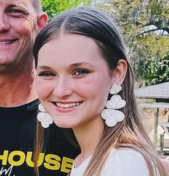
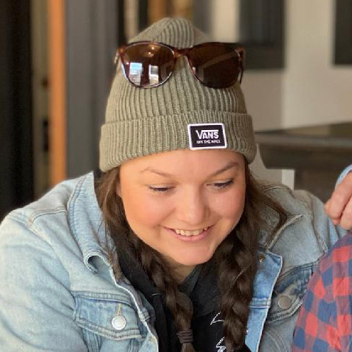
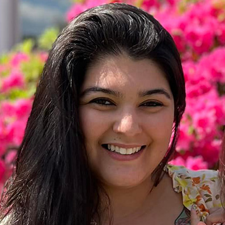
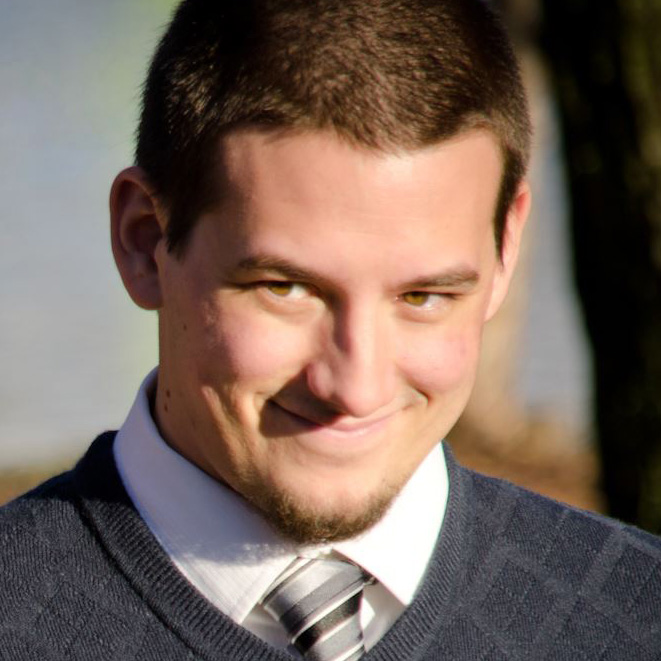
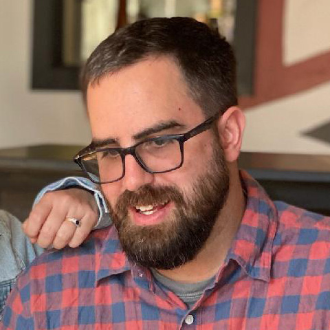
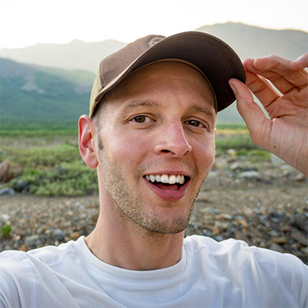
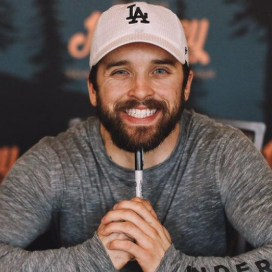

Jessie has been Joelle's best friend since they bonded over Steven Universe while working at a Red Robin in Panama City Beach, Florida. They've gone through multiple moves and have both ended up back in Virginia. Jessie enjoys spending her free time playing video games with Joelle and her husband, Myeong, or hanging out with her Boston Terrier, Iggy.
Kinsley is Joelle's youngest cousin. They were close when Joelle lived in Florida but haven't been able to see each other as often since so Joelle is thrilled that she can come and be a part of her special day! They still share a special bond through their love of art, music, and animals, and see each other whenever Joelle gets the chance to go back down to Florida.
Wife of Jack, mother of dogs, and lover of french fries: Fe is one of Corey's closest friends, and was introduced to Joelle soon after she and Corey started dating. Corey and Fe have bonded over a love of food- cooking it, eating it, and watching (while also criticizing) cooking shows together. They have often vacationed with their friend group together, with Joelle included more recently. Through all the good times and bad Fe has been there with a shoulder to cry on or a celebratory cocktail. She has always welcomed friends into her and Jack’s home with open arms and an eccentric trio of Boston Terriers.
Corey (along with Jordan) met Sandra running the games for their church youth camp in 2014. Jordan and Sandra started dating soon after that and were married a few years later. The two of them often met and hung out at Corey's house while they were dating as it was a convenient halfway point. The three of them bonded over food and beer. While Joelle has only gotten to know Sandra more recently, she has joined her and Jordan for multiple backyard barbecues or nights out to dinner in the city, more often than not with their daughter alongside them to provide endless entertainment.
Ryan and Corey originally bonded over a mutual love of waffles and coffee, then over serving together at Hope Point Church- in particular during running the games for youth camp. They have been friends for nearly 15 years now. Over the last six to seven years Ryan (and wife Christa) has been the gracious host of many weekly fireside gatherings of cigars and bourbon. Whether this includes fifteen people or just Ryan and Corey sitting on the porch “practicing for retirement”, it never fails to be a good time.
Jordan is perhaps Corey’s longest standing friendship, known more to him as a brother than just a friend. Meeting originally at Hope Point Church, they spent many years running media production for the youth services together. They’ve subsequently bonded over everything from video games to their love of cars and beer. The two have shared many hobbies and nearly every major milestone together. Rightfully earning the moniker Jorey years ago, Jordan and Corey have been nearly inseparable for the past twenty years.
Corey was introduced to Jack soon after meeting Jordan. The three have run in the same circles, getting into the same trouble, ever since. It wasn’t until college that Jack and Corey became truly close, by which point Jack had found his own soul mate in Felicia. Corey has been their forever third wheel, joining them on vacations, crashing on their couch, and being “dogfather” to their four Boston Terriers. Now with Jack working from home and living only a mile away, Corey can often be found on his couch, in his fridge, or playing with the dogs while Jack works.
A fellow Pittsburgh transplant, Vance has bonded with Corey over sports, movies, and video games. In the early days they spent much of their time together going to midnight movie showings and staying up until all hours of the morning playing games. For most of their fifteen years of friendship Vance has been chasing his dreams in LA, but the remain close by playing together often and frequently spending time on the phone discussing books, movies, life, and, of course, the Steelers.
Seth is the “newest” of the bunch, only knowing Corey for about eight years now. Upon their first meeting Corey didn’t like Seth very much, but it only took them a single afternoon of actually getting to know each other to realize they would be lifelong friends. They enjoy a mutual love of fine whiskey and cigars, and often joke about feeling like they have known each other much, much longer. Seth no longer lives in the Richmond area, but he and Corey have only grown closer as the years have gone on, spending many hours on the phone talking about life, love, and family.
Joelle has been a nanny for Vihaan and Viheer for over two years now and they have become a huge part of her life. They love legos, art, and forcing Joelle to jump with them on the trampoline as much as possible. Viheer loves books and has recently started playing sports like his brother! Vihaan has tried a little bit of everything, but has become an especially accomplished swimmer over the past year. Make sure to wish Vihaan a happy birthday on the wedding day!